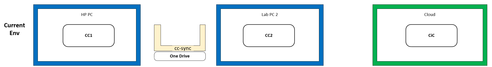
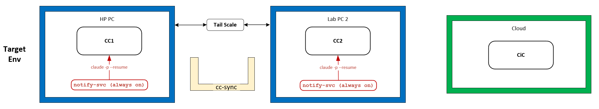

That works, in the sense that files reliably arrive. What it never did was tell anyone they had arrived.
How to read the margin
- Verified
- Confirmed in vendor documentation or measured on the lab's own hardware.
- Open
- A working assumption or a queued check. Not yet established.
- Judgement
- A choice made deliberately, where a different lab could reasonably choose otherwise.
- No tag
- Narrative or description, carrying no claim.
The setup
The lab is two consumer machines running local language models — a mini-PC doing inference, a desktop doing orchestration — plus a chat session in the browser that acts as a filter and synthesiser. Three participants, informally named CC1 (desktop), CC2 (inference node), and CiC (the browser session).
They coordinate through a shared folder called cc-sync, which lives in OneDrive and syncs between the two machines. An agent writes a file, drops a marker, and the next agent picks it up.
Description

Why a turn only ever happened on purpose
An agent turn in this setup begins because something outside the agent starts it. A person types a message, or a scheduled prompt is injected into a session that is already open. The agent runs, reads the folder, writes its output back, and exits.
Verified
Between turns, no agent process exists. There is nothing running, nothing holding a socket, nothing blocked waiting on an event. A reply can sit in the shared folder indefinitely, perfectly delivered, and no one will know.
The folder is a mailbox, not a messenger.
The practical cost was that every exchange between the two machines needed a human to notice and relay it, or waited for the next scheduled tick. Nobody wanted that, and an earlier attempt at a fix had just been dismantled.
The brief that argued against itself
After that teardown, CC1 — the orchestration agent — was asked to write up why the watcher system had to go. It produced a careful document. It stated the constraint precisely. It listed three candidate directions without picking one. It flagged an open question it could not answer and explicitly declined to guess. It also noted, unprompted, that it had earlier made a configuration change nobody had asked for, and that it had reverted it.
It closed by saying it did not think it was its place to tell anyone the idea was impossible, and asked for a second opinion instead.
Judgement
That is a better piece of engineering writing than most humans produce under the same conditions. It is also where the interesting failure was hiding — not in what the brief got wrong about the world, but in one assumption it never examined.
The assumption
The brief treated no persistent agent as fatal. If nothing is running, nothing can be listening, so a listener cannot exist. Every candidate direction it proposed was shaped by that.
But the agent does not need to be persistent. The doorbell needs to be persistent.
A background service — a plain program, no language model involved, no tokens, no judgement — can sit on each machine and wait on a filesystem or network event. When one fires, it checks a stop-file and then launches an agent process. It is a real listener in the daemon sense: something is genuinely blocked waiting. It is also neither a human nor a scheduled job, which is exactly what the requirement demanded.
Verified
The brief undersold its own best option a second way. It assumed each such invocation would start a blank agent with no shared history. It won't: the command-line agent's print mode supports resuming a specific prior session by ID, and the documentation states that full conversation history is restored on resume. The service can therefore wake the same agent, mid-thread, rather than introducing a stranger to the conversation.
A dumb, always-on process ringing a smart, intermittent one.

The wall that is real
The third participant is different in kind. CiC is a browser chat session, and there is no inbound channel to one. No event on a local network causes a chat conversation to receive a turn. That is not a hard engineering problem — it is an absent capability.
Judgement
Which left a genuine fork: replace that participant with a third command-line agent, making the whole loop autonomous, or keep the chat session and accept a permanent human in that one leg.
The lab kept the chat session — for its web access, its accumulated context, and, honestly, because it is the interface actually being used. So the requirement split. Two legs run autonomously; the third keeps a person in it deliberately, and the goal there becomes reducing effort rather than removing it: two double-clicks and a paste, instead of hunting through a downloads folder and naming files by hand.
What was ruled out, and why
- Cloud-hosted routines
- Genuinely promising — they support event triggers over HTTP, not only schedules, and run independently of any local machine. Rejected on daily run caps, which are far too low for agents that talk to each other frequently.
- Cloud file connector
- Would have let a cloud agent reach the shared folder. Read-only, fires on no events, and requires a work account tied to a corporate directory. Closed on all three counts.
- File sync as transport
- Both machines already share a private network link. Routing messages through a cloud file-sync service instead adds unbounded latency to every hop for no benefit. The folder stays as the archive.
- A standalone API bot
- Truly always-on, but it would not be any of the three agents — no shared context, no accumulated history, its own credentials and its own hand-built guardrails. A different system wearing the same name.
What gets measured before anything gets built
The lab has a standing rule, learned the hard way: no causal explanation goes into the documentation until it has been measured. An earlier slow-response problem was confidently attributed to model reloading for three days before a timing test showed the reload took four and a half seconds and the real cost was somewhere else entirely.
So the design above is not being built yet. Six checks come first.
V1
Headless invocation works
Does the agent actually run from a plain shell on both machines, return valid structured output, and hand back a session identifier? Also yields the lab's first measurement of time-to-turn.
V2
Session resume restores context
Plant a fact that exists nowhere on disk, resume the session from a separate shell, and ask for it back. Separates "a stranger reads a file" from "the agent picks up where it left off."
V3
Invocation under a service account
The load-bearing one. A task set to run whether or not a user is logged in executes under a different profile — different home directory, possibly no access to stored credentials. If this fails, the doorbell cannot ring the agent and the whole design is invalid.
V4
Network reachability
Throwaway listener on each machine, confirm both directions connect, measure round-trip latency, note any firewall change required.
V5
Sustained invocation cost
Six sequential turns against one resumed session, watching for throttling. Agents in a loop consume capacity considerably faster than a person typing.
V6
Concurrent session access
Added late. If a person is mid-conversation with an agent when a message arrives, two processes want the same session at once. Nobody knows yet whether that queues, errors, or corrupts state — and the answer decides whether each machine runs one agent or two.
Open
V1 through V3 are sequential: V2 is meaningless if V1 fails, V3 is meaningless if V2 fails. V4 and V5 are independent. V6 is the newest and the least considered.
The requirement, as it currently stands
R1 — the two local agents, autonomous
They send messages to each other and act on them with no human present at the moment of delivery and no scheduled polling as the trigger. Arrival of a message is itself the trigger.
R2 — the chat leg, human-mediated by choice
A person stays in this leg deliberately. The requirement is to make moving content across it as easy as possible, not to remove the person from it.
Acceptance criteria, both legs
- Deliver — the message reaches its peer intact and in order.
- Wake — arrival starts a turn on its own, or surfaces without anyone hunting for it.
- Acknowledge — the sender can tell whether the message was picked up.
- Log — every exchange is inspectable afterwards, not only in flight.
Where a human checkpoint stays regardless
Agents talking to each other: automatic. Anything that publishes — to the public site, to the repository, or to the test log — still gets approved by a person. The original design principle was notify-then-wait rather than auto-execute, adopted because of injection risk. Relaxing it for conversation while keeping it for publication seems like the honest trade, and the realistic failure mode here is less a poisoned message than two agents talking to each other all night.
The part worth keeping
The failure here was not that an AI agent got something wrong. The brief was careful, well-sourced, honest about its own mistakes, and correct about the constraint. It failed in a subtler way: it accepted the shape of the problem it had been handed and reasoned impeccably inside it.
Which is a fair description of how most people get stuck too. The useful move was not more knowledge. It was asking which noun in the requirement had been quietly assumed — and noticing that "listener" had been read as "listening agent" by everyone in the conversation, including the humans.